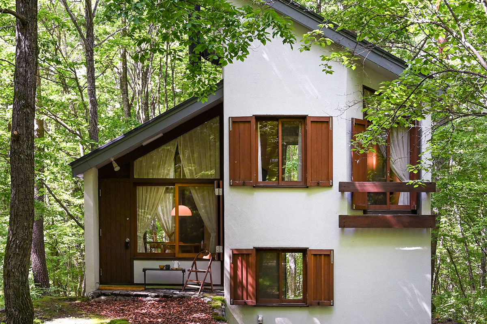
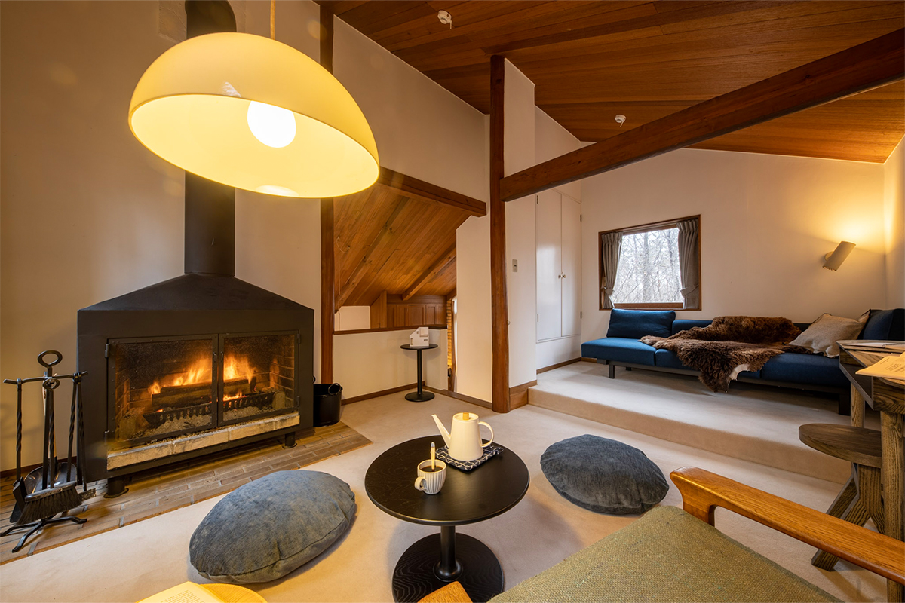
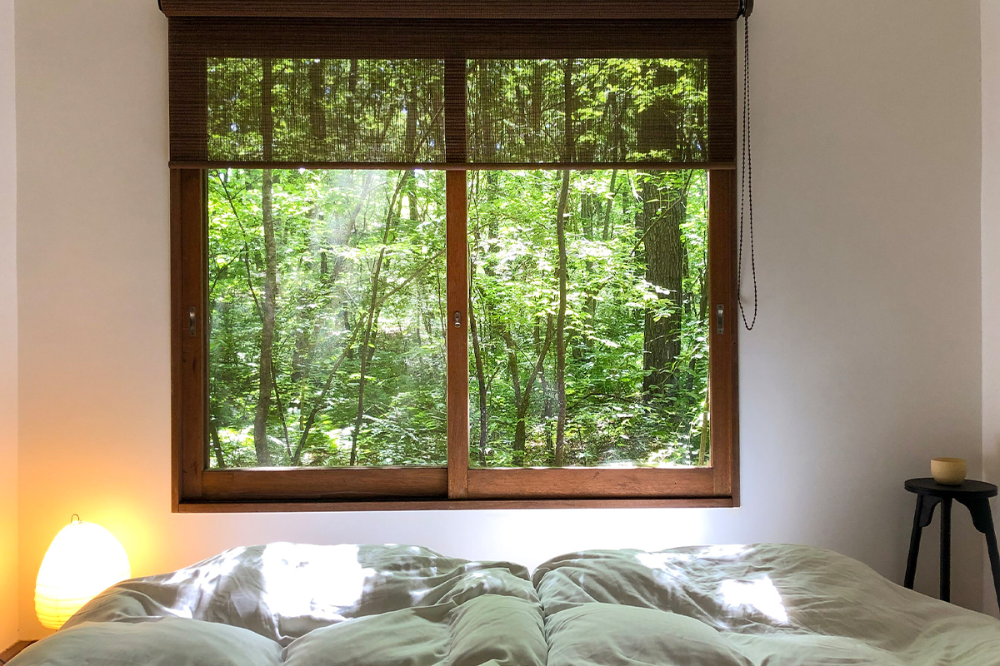
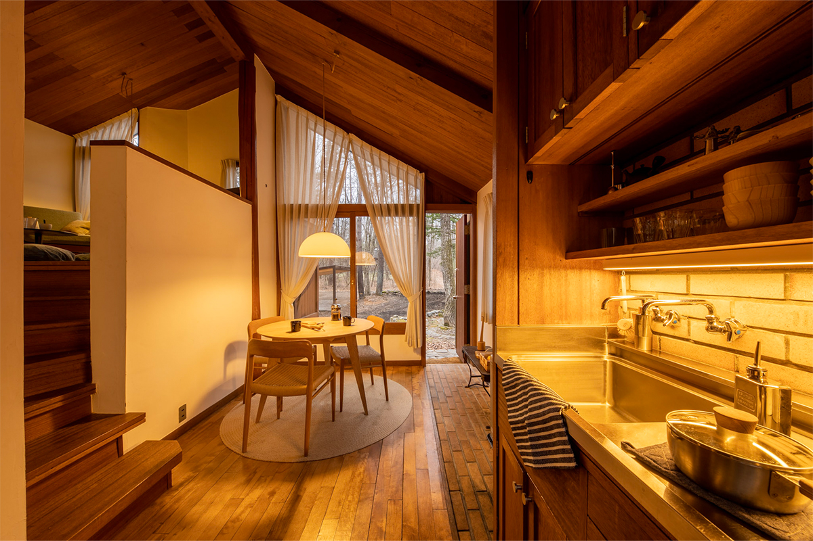
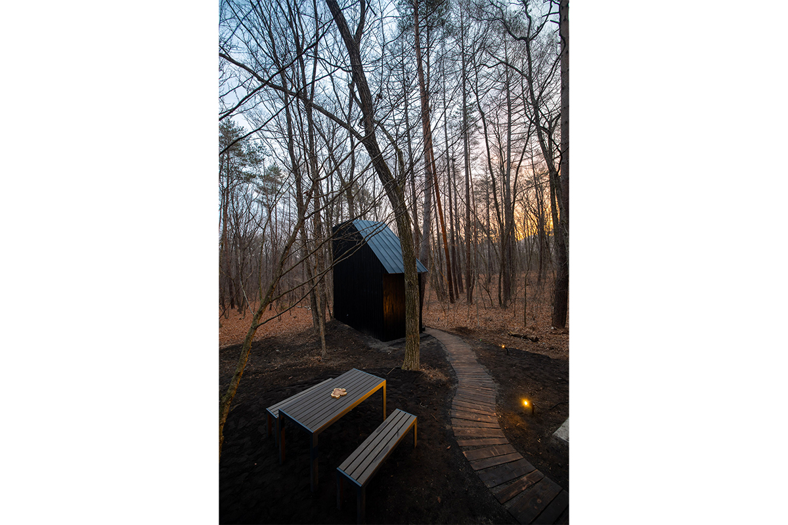
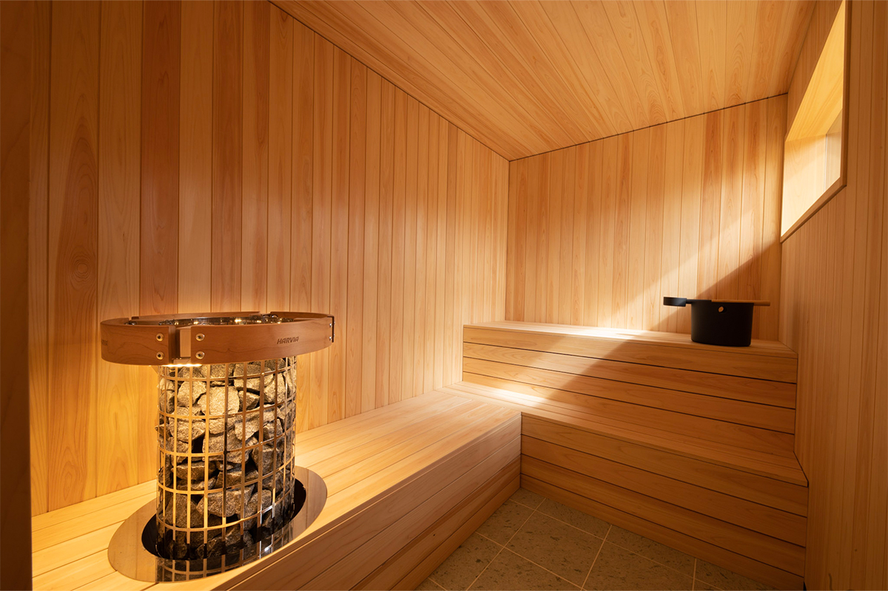
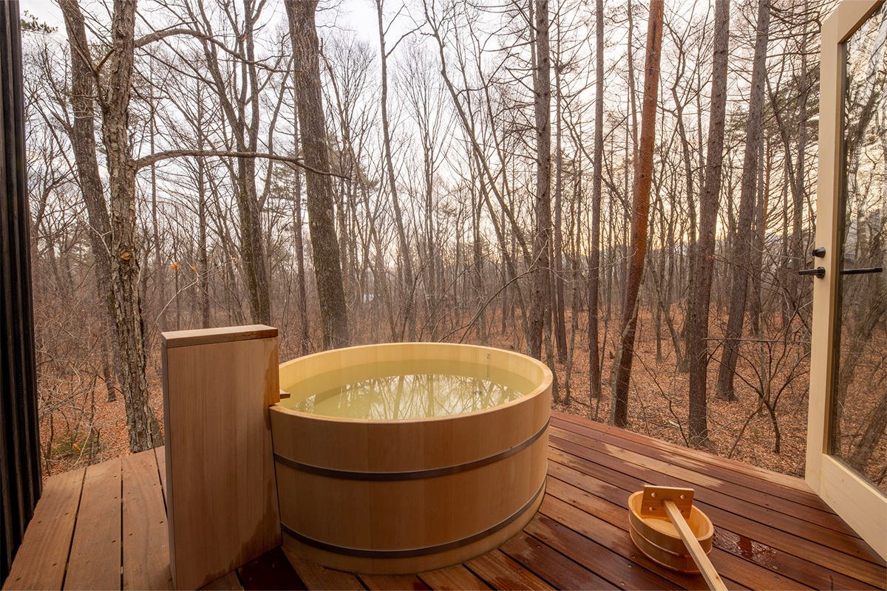
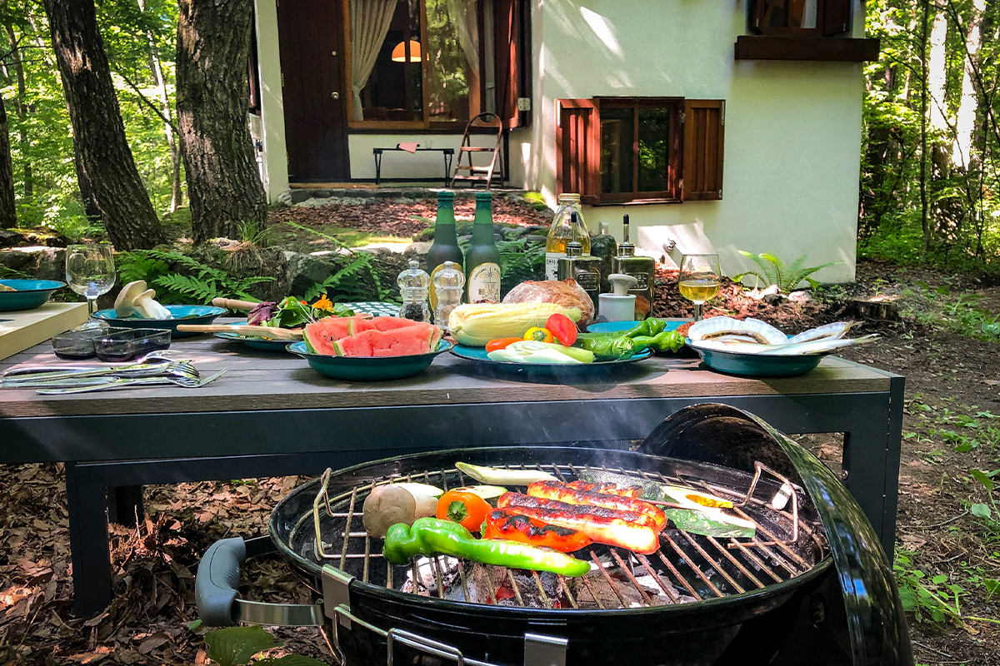
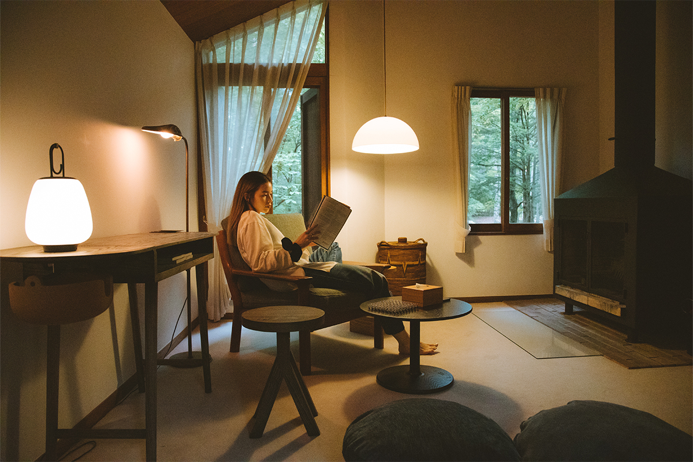
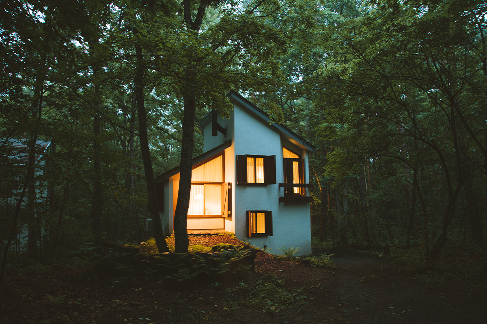

Префектура Гумма · Кита-Каруидзава · где остановиться
Tatehata House: дом архитектора 1968 года в лесу Кита-Каруидзавы, с сауной и купелью из хиноки

У подножия вулкана Асама, в дачном посёлке, который почти сто лет любят писатели и учёные, сдаётся целиком дом, построенный архитектором для себя в 1968 году. Сауна, купель на деревянной террасе и тишина леса делают из него место, где время идёт медленнее.
Место
Дачи для писателей и учёных
Кита-Каруидзава лежит на северном склоне вулкана Асама, в префектуре Гумма. Здесь прохладнее и суше, чем в соседнем Каруидзаве, и летом можно жить без кондиционера. Поэтому место давно облюбовали дачники, а самый старый из здешних посёлков называется «Дайгаку-мура», «Университетская деревня».

В 1927 году ректор университета Хосэй разделил свою землю на участки и продал их учёным, литераторам и художникам. Природу старались оставить как есть: заборы ставить нельзя, цвет домов тоже ограничен. Так здесь выросла особая дачная культура, похожая на салон в лесу. Дачи в посёлке были, например, у поэта Сюнтаро Таникавы и у писателя Кэндзабуро Оэ, нобелевского лауреата по литературе 1994 года.
Tatehata House тоже стоит в «Университетской деревне». Это небольшой дом площадью 50 квадратных метров, который архитектор Камон Татэхата построил для себя в 1968 году. Татэхата проектировал дома для многих людей искусства: для Кэндзабуро Оэ, для известной актрисы, а одному сценаристу спроектировал дом в Фурано на Хоккайдо. Дом опубликовал архитектурный журнал «Синкэнтику» в 1968 году, и полвека его бережно сохраняли. В 2021 году он открылся для гостей под названием Tatehata House.
Дом
«Финляндия, я дома»
Замысел был в том, чтобы гость почувствовал себя в северном лесу: прохладный климат Кита-Каруидзавы, скандинавский дизайн и финская сауна. При ремонте дому оставили его мягкую, обжитую фактуру. Идея выражена одной фразой: «Финляндия, я дома». Мебель подбирали тщательно: здесь стоят вещи португальского бренда, который в Японии не продаётся, и работы отдельных мастеров.


Сауна
Своя сауна и своя купель
По тропинке от дома идёшь к отдельному домику, «сауна-кота». На первом этаже финская сауна, отделанная кипарисом хиноки из долины Кисо. На втором этаже, на террасе, стоит просторная купель из хиноки с видом на лес. Любители сауны наполняют её холодной водой и сами выбирают температуру парной и купели, чтобы поймать то самое чувство полного расслабления, которое японцы называют «тотоной».



Для ужина на свежем воздухе можно взять напрокат гриль.

Время
Тишина, в которой рождаются идеи
Чистый воздух с запахом деревьев, такая тишина, что слышны звуки, обычно тонущие в городском шуме, смена времён года, архитектура и мебель. Всё это не только успокаивает, но и приятно будоражит. В таком доме хорошо работать или писать: сосредоточиться легко, а перерыв можно устроить в сауне или в купели.

Дом, где время сохранило архитектуру, а ремонт добавил уюта, подходит для того, чтобы провести время в узком кругу, будто в лесу далеко на севере Европы.

Tatehata House
- Адрес
- префектура Гумма, уезд Агацума, Наганохара, Кита-Каруидзава, 1924-1005
- Телефон
- +81 50-3116-0974
- Цены / Вход
- от 50 000 иен за дом (до 4 человек)
- Заезд / выезд
- заезд 15:00–20:00, выезд до 11:00
- Номера
- дом целиком; Wi-Fi, холодильник, камин, кухонная утварь и посуда, фен, ванная, купель под открытым небом, сауна
- Как добраться
- на машине около 30 минут от развязки Усуи-Каруидзава; от станции Каруидзава около 25 минут на такси
Фото: Хикару Такэдзава.